Speaking of food, what's up with pie? There's strawberry pie, apple, pumpkin and so many others, but there is no grape pie! I know. I'm just as upset about this unfortunate lack of development in the pie division. Think about it. Grapes are used to make jelly, jam, juice and raisins. What makes them undesirable for pie? Would they dry into raisins? Couldn't you just stick some jelly in a piecrust and bake it? It just doesn't make any sense.
-eon337, ~2004
I'm back. And I've realized that I am a complete idiot. For an ENTIRE MONTH I have possesed the arcane knowledge, but I forgot to share it with you, my loyal potentially imaginary reader. I know. You're shocked at my selfish, bad, memory. I apologize from the depths of my moosey soul. For, you see...my life long goal has been fufilled...*anticipatory silence*...THERE ACTUALLY IS GRAPE PIE!!!! I know...you are as shocked as I am. One day I was randomly looking up images via Google...and 'lo and behold, there it was. Grape Pie. It was as if it had been just sitting there...waiting for me to discover it. Apparantly Grape Pie isn't mainstream, but it has existed for some time. In obscure cookbooks. Well...that just makes me filled with gooey happiness. Of course, there is also regret...after all, I could have made a fortune if I'd been the first to think of it. Oh, well. -eon337
-eon337, ~2004
JR here, and boy do I have some Truth for you: I have finally gotten a chance to make my past self jealous to a frankly upsetting degree.
That's right!
After I remembered my old site existed via people making a weird pseudo-ARG about figuring out if I was alive or not, I was, among other things, reminded of my obsession with the least of all pies.
Except unlike past me, I'm allowed to bake!
And the covid delivery economy is robust enough that I can get grape pie filling delivered, no matter how obscure it is.
So...GET! READY! TO!
| 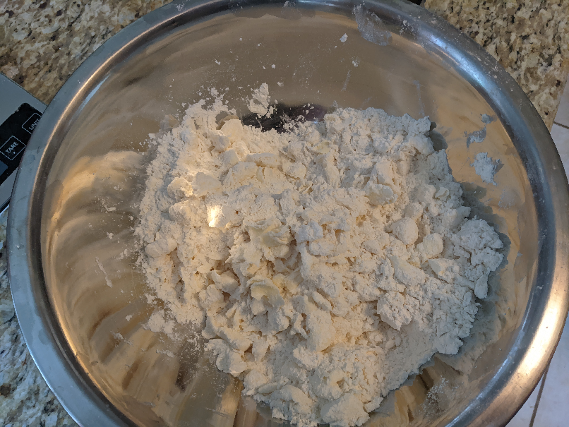 | We all know that Cooking Like a Waste means that recipes are more suggestions than anything else. So what you do is take 300 grams of flour and a little bit less than that by weight of butter and just kinda mush 'em up together. It's important the butter stays really cold |
| 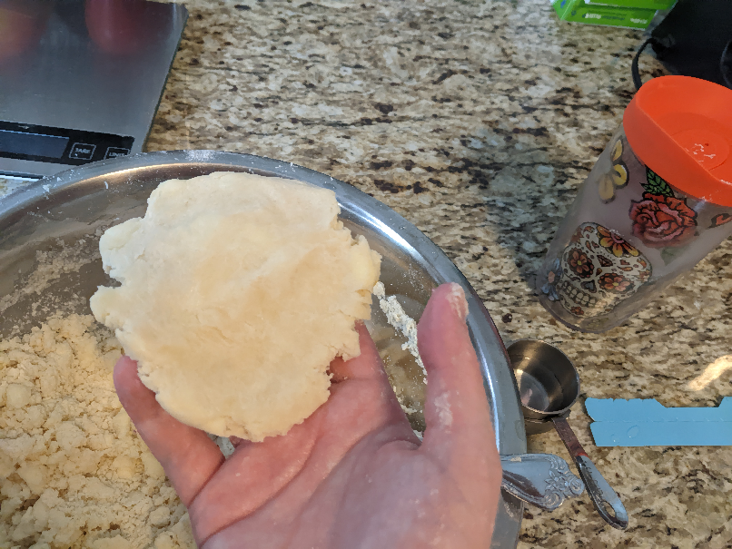 | Once the butter and the flour have mushed up to the point where theres no pieces of butter bigger than a pea, you drizzle super cold water in as you're stirring it. You might need as little as a quarter cup or as much as a half cup but you'll know you have enough when you can squish the dough and it stays together rather than crumbling. |
| 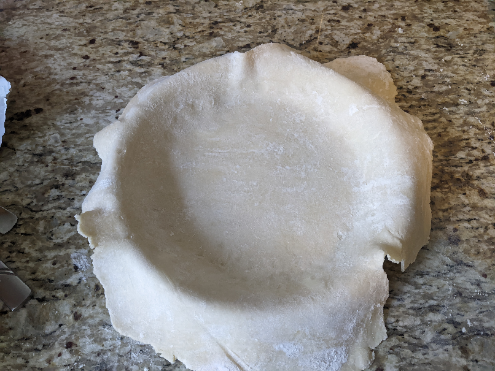 | Rolling it out wasn't as hard I was was worried about. You just need to refridgerate the dough for ten minutes before you do so its not sticky. I used about half of it to make the bottom crust and half to make the top. You just kinda drape the bottom crust over a pie tin, dont' worry about it. |
| 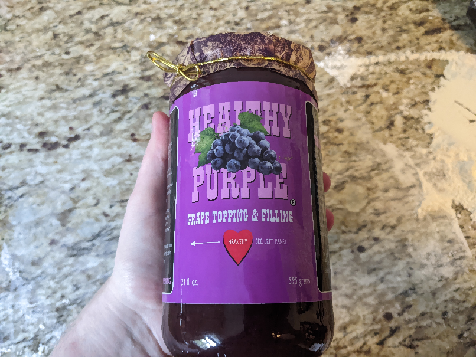 | Apparently to make grape pie filling you have to INDIVIDUALLY PEEL THE GRAPES. Fuck that shit. No wonder its an obscure pie. I bought premade filling from New York. |
| 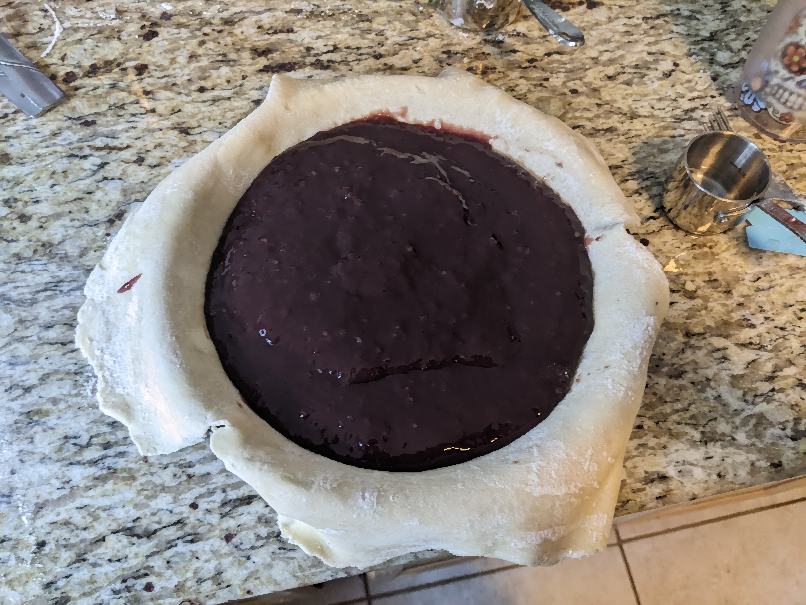 | I just dumped most of it in. |
| 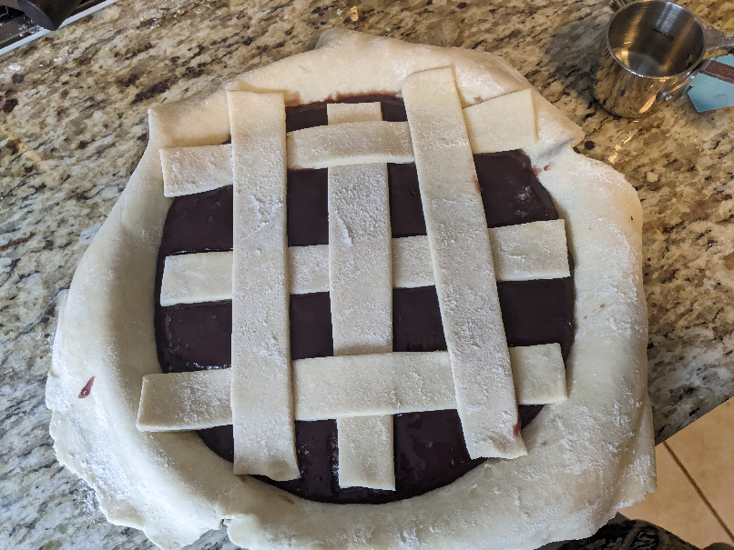 | This is my first time making a lattice type pie, so I just kinda did whatever. The instructions said to pre-weave it but I just kinda mushed it around on top of the filling. |
| 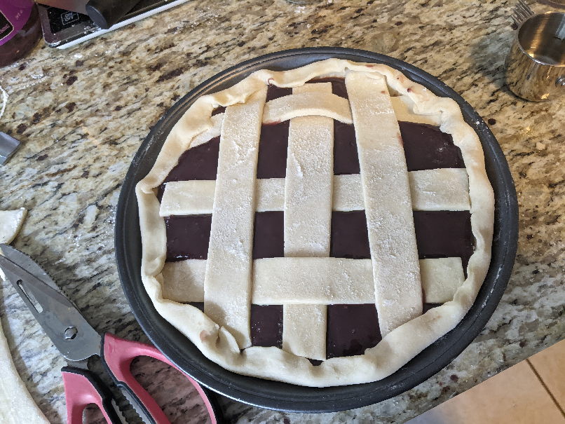 | Then I cut away excess bottom crust and kinda mushed it onto itself to hold the lattice in place. I really didn't care about aesthetics, because, again, Waste. |
| 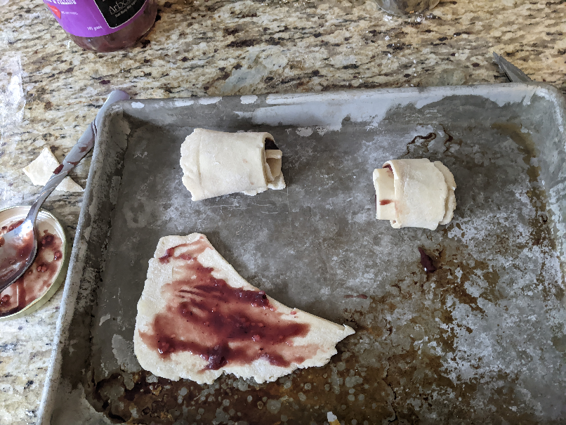 | I have NO idea if you're supposed to have this much leftover dough so I just rolled them into lil pinwheel jam cookies. |
| 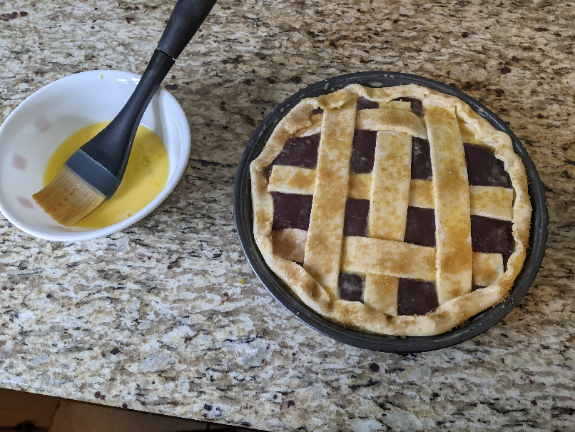 | A tablespoon of water and an egg gets rubbed all over the pie so you can sprinkle sugar onto it. |
| 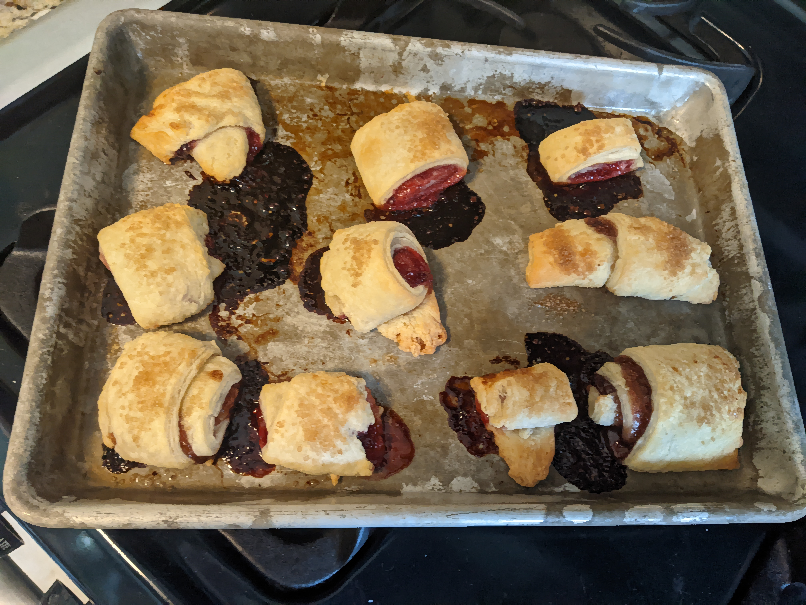 | I baked the EXPERIMENTAL COOKIES for 15 minutes in a 400 degree air fryer because of course I did. They came out really crunchy and flaky. 10/10 |
| 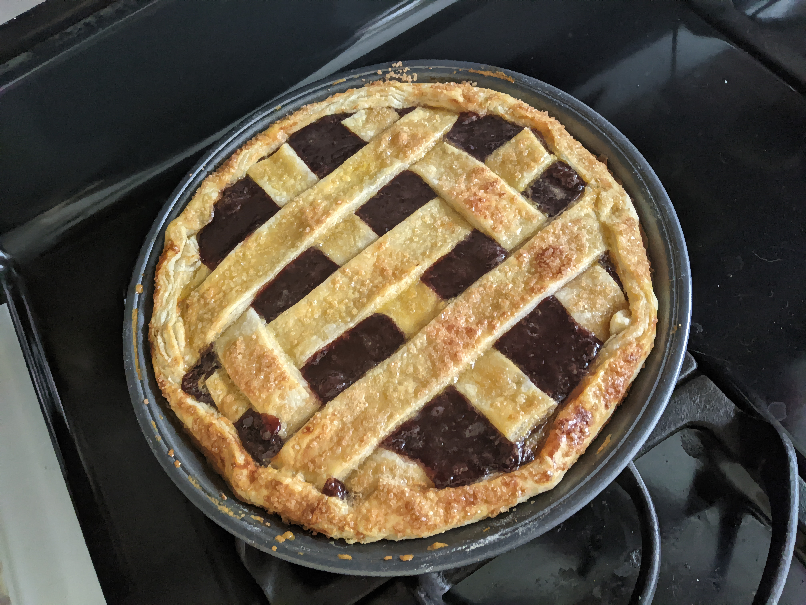 | I baked the BLASPHEMOUS PIE THAT SHOULD NOT BE at 400 degrees in an air fryer for 10 minutes, than turned it down to 300 for another 25. It came out all golden brown. |
| I haven't cut into it yet or tasted it, so stay tuned to find out how it turns out. |
It's SO weird seeing past me. Cringe, yes, of course, but in an...adorable way? I can see pieces of myself in them, and I can see how much of myself I managed to hold onto over the years? I still like talking to hypothetical audiences, doing experiments online, obsessing, making things just to learn how they work... I've just gotten monstrously better at all of those things compared to my past self.
I really hope the Unmarked and Wastes reading this get to a point where they think their past selves are adorable too :)
btw ten points if you know the two things this pages formatting is in reference to!!!